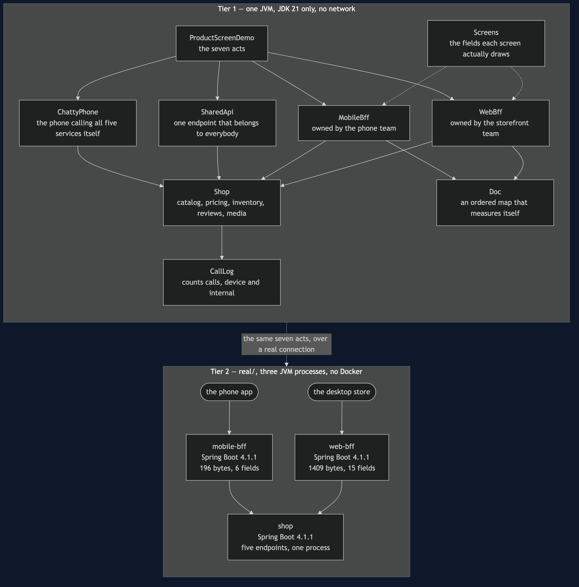

Backends for Frontends Pattern — Architecture Diagram
Where each piece runs, in both tiers, and which technology it is written in. The class diagram shows the types and the sequence diagrams show the order of events; this one answers the question those two cannot, which is what would I have to start.
Read it as two boxes stacked. The upper box is Tier 1: one Java program, one process, no network and no JSON library — Doc is an ordered map that can print and measure itself, and the shop returns fixed data in microseconds. The lower box is Tier 2, under real/: three Spring Boot applications, so you can watch two differently shaped documents of visibly different sizes come back from two addresses.
The shape to notice is the fan. One shop at the bottom, two backends above it, one client above each backend. The shop is not duplicated, and that is the part people get wrong when they first meet this pattern: the fix for two screens wanting different data is not a second kitchen. The food is the same food. It is a second waiter, who works one room and is allowed to change his own script tomorrow morning.
The second thing to notice is who owns each box. Each backend belongs to the team that owns the screen above it, which is why a field the phone team wants is an afternoon's work rather than five weeks in somebody else's queue. That ownership is the point of the pattern and it is the one thing a diagram genuinely cannot draw, so it is written on the boxes.

What the diagram is telling you to count
One shop, two backends, and no duplicated service boxes. The five things the shop knows — catalog, pricing, inventory, reviews, media — appear once. If applying this pattern ever makes you draw a second copy of a shop service, you have built two kitchens and you will be maintaining one recipe in two places.
Two backends, and they are different sizes on purpose. Six fields against fifteen. If those two boxes ever converged, the shop would be paying twice for one job, and the pattern should be withdrawn rather than admired. There is a test that asserts exactly that: the two backends must return different field lists.
The client boxes each have one arrow. That is the benefit the customer feels — one round trip before a single pixel instead of five, in sequence, each a wait of its own on a train. The work did not go away; it moved onto a network that costs nothing.
The neighbouring box that is not on this diagram
A gateway would sit above both backends, not beside them, and it would do the four jobs every request needs whoever sent it: check the token, apply the rate limit, terminate TLS, write the access log. It is left off because the line between the two patterns is one question and keeping them on separate diagrams is how that question stays clear:
What does this screen need? belongs in a backend for that frontend. Is this request allowed in at all? belongs in front of all of them.
A gateway is about entry. A backend for a frontend is about shape.
What it deliberately leaves out
There is no caching, no gzip, no schema, no versioning, no fan-out and no failure handling. The four internal calls are made one after another, where a real backend would issue them together — which means this project understates the pattern's benefit rather than overstating it, and that is the right direction for a teaching example to be wrong in.
The count of backends is also deliberately small. The demo's last act is about how many you should have, and the test is neither the device nor the team: it is the number of genuine disagreements about what a product is. Six clients came out as three backends, because the tablet shows the phone's fields in a wider column and that is a stylesheet rather than a service. Two backends is a pattern. Nine is a department.